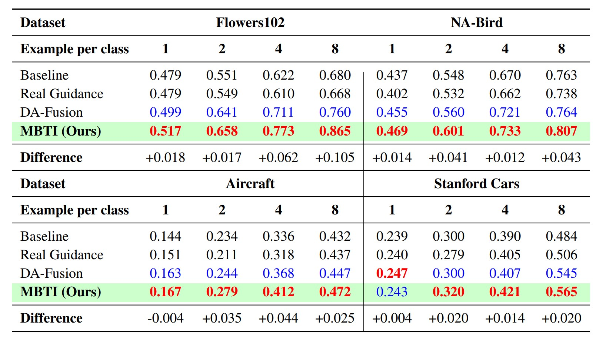

Abstract
MBTI is a plug-and-play enhancement for diffusion personalization that improves fine-grained concept learning. It promotes cross-class separation in the text-embedding space to preserve class-specific details and improve downstream few-shot performance.
Method (Pipeline)
Qualitative Results
Result 1.
Result 2.
Result 3.
Result 4.
Result 5.
Quantitative Results

Red = best, Blue = second-best.
Poster
BibTeX
@inproceedings{mbti2026,
title={MBTI: Metric-Based Textual Inversion for Fine-Grained Image Classification},
author={Chae, Byungkwan and Choi, Youngjae and Kim, Heewon},
booktitle={WACV},
year={2026},
url={https://theplace75.github.io/MBTI/}
}